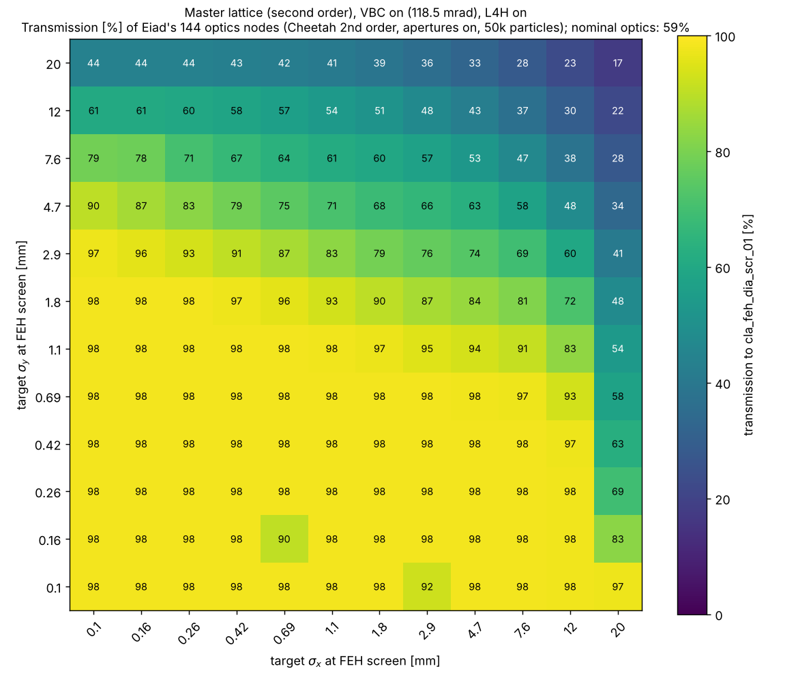
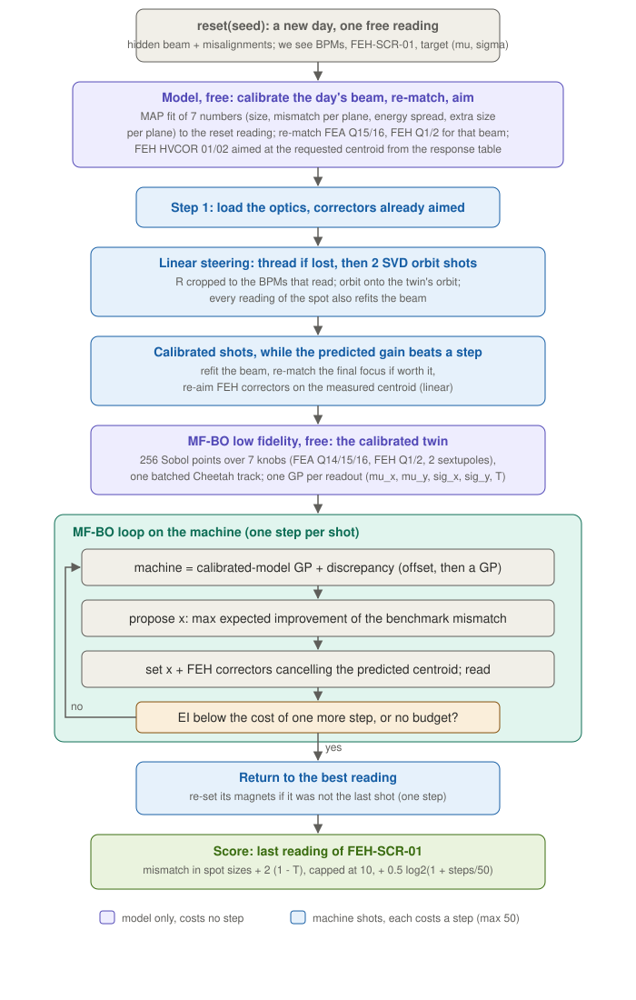
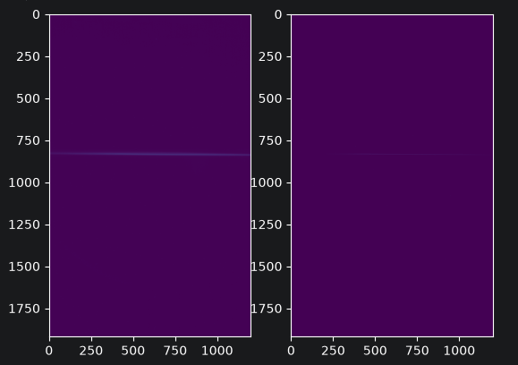
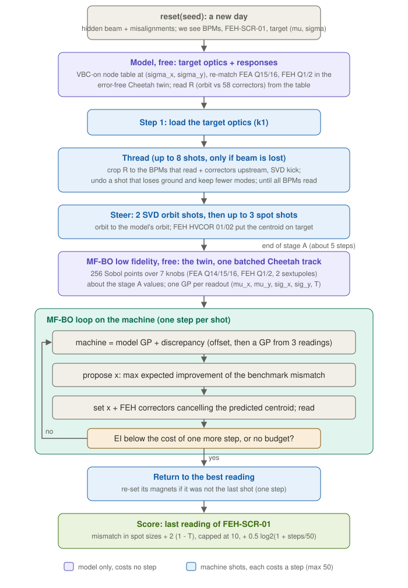
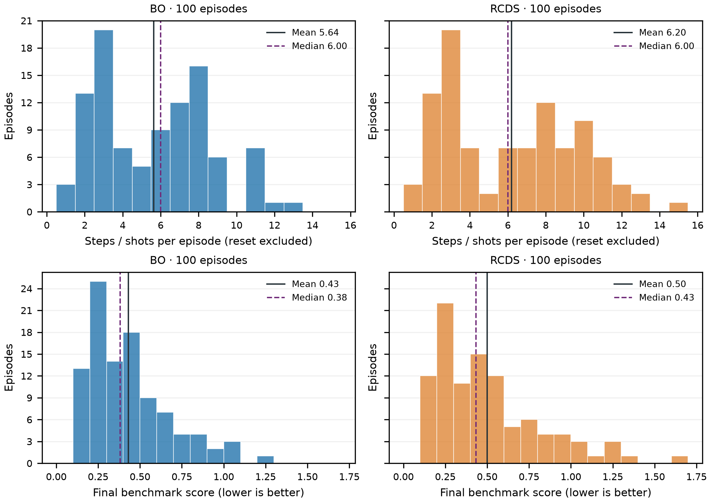
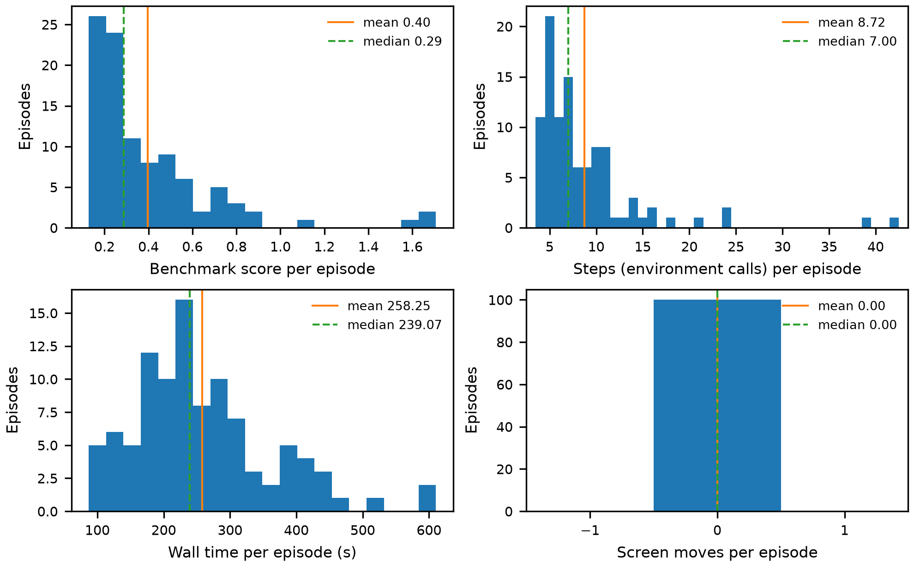
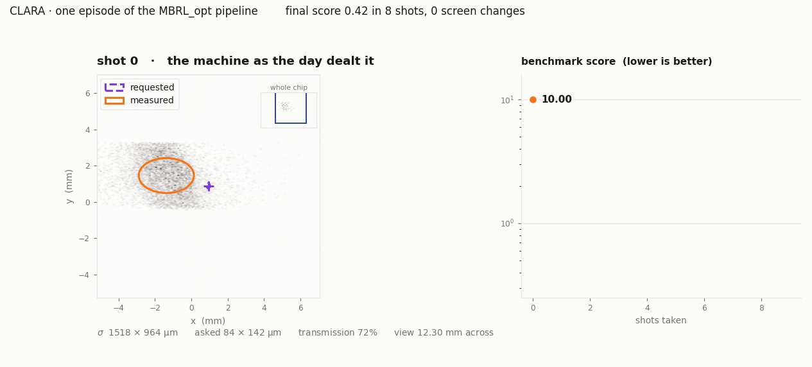

The problem
Setting up costs a morning
A user asks for a beam: a spot of a given size, in a given place on the FEH screen. Delivering it takes an operator 30 minutes on a good day and 90 on a bad one — and that time comes out of the user’s experiment.
- So the question is not can it be tuned. It is: how fast, and how much beam time does the tuning hand back?
- One line,
cla_s02_sim_aper_01to the FEH screen: 64.4 m, 655 elements, 282 apertures. - A request arrives as four numbers — position and spot size
(μx, μy, σx, σy)
at
cla_feh_dia_scr_01— with the spot anywhere from 0.1 to 20 mm in each plane. - Every episode is a different day on the machine: its own beam, its own survey error, its own request. The agent sees what an operator sees.
- Shots are the currency. Model time is free. That one sentence shapes everything that follows.
The problem
So these are the numbers we chased
Steps
Every shot is a step: set the magnets, fire, read. This is the one the operator feels. A 30-minute setup is tens of them.
Screen changes
Moving a screen in or out is 30 seconds of nobody doing anything. Read a different screen ten times and you have spent five minutes on actuators.
Wall time
What the model costs between shots. Free in beam terms — but an operator will not wait ten minutes for a magnet setting, so it has a budget too.
And of course: the match
Mismatch in units of the requested spot, plus what was lost on the way, plus the cost of the steps. One number, lower is better.
Everything in this talk is judged on those four.
The problem
The line

Floor plan (VBC chicane, FEA dogleg), the lattice, and the x/y half-apertures, with the nominal ±3σ envelope. Pipe 17 mm; L4H iris 4.12 mm; TDC 5 mm.
The problem
Why it is not easy
- Two bottlenecks: the 4.12 mm L4H iris and the 5 mm TDC aperture in S07.
- With the nominal optics the vertical beam (±3σ ≈ 9 mm) is larger than both, so only 59% of the bunch reaches the screen — and it is lost in the middle of the line.
- Apertures make the objective a staircase: a particle is in or out, so there is no slope to follow.
- Two orders of magnitude of target spot size means two orders of magnitude of optics.
- And the model is not the machine.
VBC at 118.5 mrad; at the 131.7 mrad default it is 72%.

The problem
How we split it
| Francesco | Sim2real matching with tomography and beam optics, the VBC-on rematch, and the multi-fidelity BO pipeline: twin as low fidelity, machine as high fidelity. |
| Eiad | Beam optics and SVD: the reference tune, which quadrupoles and correctors matter for a given target, per-node orbit responses cross-checked in Cheetah and xsuite — and the staged SVD tuner that runs the whole pipeline on the machine. |
| Ivan | Numerical optimisation section by section — response-matrix correction, BO, RCDS, RCDS+BO and PPO, all on the same image budget. |
| Manuel | A robust measure for real screen images, and a filter for the captures worth using — a DALIA job over the whole 0.8 TB. |
| Amy | The framework and simulation environment, and a model-based RL agent built against it, driving Eiad’s SVD controls. |
Five people, seven workstreams, one weekend.
The pipeline
The pipeline
Everything that can happen in the model happens in the model. The machine is only asked when it has to be.
Closing the sim2real gap
1. The episode
SimEnvdeals a new day: a realistic beam, the lattice with small perturbations, a survey error, and a request.- Cheetah 0.8.4, second-order tracking, apertures on, 200k particles for the reference work and 50k for the sweeps.
- The agent sees what an operator sees: BPM centroids, and screens that cost a shot.
Cost: the 282 aperture elements break Cheetah’s map fusion: a track costs 90 ms instead of 37. Everything downstream is paced by that.
Closing the sim2real gap
Francesco to check
First: does the model even explain the beam?
- Reconstruct the full 4×4 transverse moment matrix — ten unknowns, x–y coupling included — from the screens along the line. Every screen sits at a different transport map, so the line is the scan. No quad scan, no extra shots.
- The forward model is the xsuite line, sliced into nine energy slices, with the launch trajectory and all 46 quadrupole offsets fitted from the BPMs first.
- That last part is not optional: leave the quadrupole offsets out and a chromatic kick masquerades as dispersion, putting 50% error into the dispersive screens.
The test is whether the model can explain 23 screens at once:
| Model | χ²/dof |
|---|---|
| Achromatic, on-momentum | 87 |
| + xsuite energy slices | 15.5 |
| + fitted orbit | 2.5 |
| + dispersive weights | 1.2 |
Honest limit: the horizontal plane and the coupling come out well (6–8%). The vertical ellipse is nearly degenerate, so εy amplifies a 2% data error into 46% — we do not believe it, and say so.
Closing the sim2real gap
2. Nominal optics from the lookup
- A matched family over a 12×12 grid of target sizes, 0.1 to 20 mm, log spaced. Each node sets all 46 quadrupole k1 values.
- 42 quadrupoles are a shared prefix that carries the beam through the apertures; the final focus does the rest.
- Re-matching removes those losses outright: median transmission 92.7% with the VBC on, 97% with it off.
- No shots, no machine time. It hits the requested size to a fraction of a percent in its own model.

Cost: the family was matched with the VBC switched off. With the machine’s VBC on, the large-spot corner loses up to 80% of the beam.
Closing the sim2real gap
2b. …which is why we rematched it
- VBC at the measured maximum compression into FEBE: 131.7 mrad, R56 = −57.6 mm.
- Keep the 42-quadrupole prefix, refit the 30 quadrupoles after the VBC per node — L-BFGS through differentiable Cheetah.
- Only a handful of magnets do the work: S06 Q01/Q02 for the VBC, FEA Q15/Q16 and FEH Q1/Q2 for the size. The rest are degenerate.
- Checked in both backends: all 144 nodes tracked with the same 200k bunch in Cheetah and in xsuite give a median transmission of 98.95% either way, and never differ by more than 1.1 points at a node.
| Before | After | |
|---|---|---|
| Median transmission | 89% | 99% |
| Median size error | 285% | 1.6% |
96 of 144 nodes at T ≥ 95% and within 5% of target.

Closing the sim2real gap
Then: make the model this day’s machine
- Resetting the episode already returns a reading. It is free, and it is data. Fit the day's beam in the twin from it, then refit after every reading that follows.
- Load the re-matched optics with the FEH correctors already aimed at where the calibrated model says the spot will land.
- So the first shot is not a probe. It is an attempt.
| 30 days, paired by seed | Score | Steps |
|---|---|---|
| Steer only | 0.59 | 4.7 |
| Steer + MF-BO | 0.41 | 7.9 |
| Calibrate | 0.41 | 5.3 |
| Calibrate + MF-BO | 0.39 | 9.6 |
Calibration alone buys what the whole optimiser bought, two to three steps cheaper. Together they take the best of both: fitting wins on the days the final focus can reach, searching wins on the rest.

Closing the sim2real gap
7. Reading the screen — the same measure on both sides
- Threshold each frame at a tenth of its own peak, then take the intensity-weighted centroid and rms from the row and column sums — no full coordinate grids, four scalars off the device.
- Per-camera µm/pixel calibration for all 28 screens, so the numbers come out in metres.
- Run over the 0.8 TB of real CLARA HDF5 captures as a DALIA job.
- The same measure drives the agent in simulation. The benchmark scores the particle moments; the agent never sees them.
Cost: it costs accuracy and it costs speed. It is also the only version of the loop that could be moved onto the machine unchanged.

Closing the sim2real gap
Which captures can you believe?
- Not every capture has a beam in it. Clean a weak one and nothing is left — but it still returns four perfectly confident numbers.
- So each file is judged on how its readings move across its captures: keep it only if the relative variation of all four of cx, cy, sx, sy sits between 0.1% and 30%.
- Below that, nothing is changing and the camera is looking at a wall. Above it, the measure is chasing noise.
- 5,732 capture sets come through the filter, with their means, spreads and ranges.

Finding the knobs
3–4. Steering: SVD, then one shot
- SVD of the corrector-to-BPM response at the loaded optics ranks the corrector planes; invert the leading ones and correct in one shot.
- On the xsuite model: one BPM shot takes the orbit from 2–4 mm rms to about 0.15 mm.
- Fitting first is better still: stepping each quadrupole by 5 A recovers 99 µm rms quadrupole offsets to 6 / 15 µm (x / y) from BPMs alone.
- Typically 1 iteration in the pipeline, 4 in the worst case.
- And on a healthy machine, we measured it doing nothing. Every pipeline variant that includes the BPM steering scores worse than the one without it, and pays 3.5 extra shots for it: 0.53 without, 1.49 with. It now defaults to zero shots.
Cost: the reference optics already delivers beam to every BPM, so there is nothing to recover and the orbit bottoms out around 550 µm anyway — a handful of correctors against a survey error on 46 quadrupoles. It earns its place on the day the beam is lost, not on the day it is merely off centre.
Finding the knobs
5. The focus control set
- The same trick again, but for focusing: SVD of at every screen and the readout, over all 46 quadrupoles — and of the centroid response over all 58 corrector planes.
- Each magnet gets a score over the modes holding 99% of the squared response, so the control set is ranked, not guessed.
- What survives the ranking is small: the five quadrupoles nearest the IP (FEA Q14/Q15/Q16, FEH Q1/Q2), the nearest correctors in each plane, and the two FEA sextupoles. Out of 46 + 58 knobs.
- 1.5 to 2.5 minutes per target on the error-free model. Zero environment steps.
Cost: the centroid SVD ranks the last two correctors near the bottom, because they move nothing but the final screen — which is exactly the property we need to place the spot. The ranking has to be read with the objective in mind; it is why placing the spot is its own step at the end.
Strategies
Comparison and applicaiton of different optimization methods
Different methods applied to a sigle section

Response method applied segment-by-segment

Strategies
And section by section: what actually wins?
Same section (S04), same image budget, same objective — response-matrix correction, BO, RCDS, RCDS+BO and PPO, head to head.
| 9 images, 4 held-out beams | Objective |
|---|---|
| PPO, trained on one beam | 0.264 |
| Response correction (2 images) | 0.268 |
| RCDS, response directions | 0.279 |
| RCDS, plain | 0.283 |
| RCDS, plain, at 32 images | 0.091 |
- At a realistic image budget they are all within noise of each other. The budget decides the result, not the algorithm.
- Give it room and the picture changes: over five beams at 128 images, RCDS 0.126, RCDS+BO 0.119 — and response correction 0.017.
- What wins is using the vector residual and a model-based correction on every image. RCDS only ever sees a scalar.
Local screen objective on S04, lower is better. Not the whole-lattice FEH score.
Strategies
6. Tweak the tune, one: multi-fidelity BO

- Low fidelity is the twin, high fidelity is the machine. 256 Sobol points over seven knobs in one batched Cheetah track: 1.5 s, where tracking them one at a time took 10 s.
- The machine is modelled as the twin’s GP plus a discrepancy — an offset, then a GP of its own once there are three readings.
- Each proposal maximises expected improvement of the benchmark mismatch, and sets the FEH correctors to cancel the centroid it predicts.
- It stops itself. When the expected improvement is worth less than the cost of one more step, it returns to the best reading it has seen.
- Purple boxes in the figure cost nothing: they are the error-free twin. Blue and teal are shots.
Strategies
6. Tweak the tune, two: model-based RL
The twin
A differentiable Cheetah copy of the environment’s own lattice. System identification fits the episode’s beam — and optionally the survey error — to the shots taken so far.
The planner
CEM to explore, Adam to refine, anchored on the last measurement:
A model wrong by a constant still predicts the effect of a move, and anchoring cancels the constant exactly.
Nearly all the arithmetic is the twin’s. An episode spends 6.5 shots on the machine and millions of particle-tracks on the model — and the focus stops as soon as it is inside the jitter, so often it is fewer. That is the whole point: only the shots cost beam time.
Two things that mattered
- Steps measured in effect, not in units. One batched track calibrates every knob so that a step changes the reading by half a requested spot. 0.1 mrad is a huge kick near the injector and nothing a metre before the screen.
- Hard walls, soft gradients.
twin._aperturetakes its value from the hard edge and its gradient from a sigmoid. Blurring the wall outright moved the predicted loss from 0.00 to 114.7 and the fit walked off chasing it.
Strategies
6. Tweak the tune, three: BO and RCDS inside the SVD subspace
- The same four stages, run straight on the machine: calibrate and reset, thread, correct the measured size, centre on the screen.
- The search never leaves the five dominant quadrupole modes, and the modal boxes are sized so every proposal is already inside every magnet limit — no clipping, ever.
- Two branches from the same start: BO (joint GP, EI then LCB) and RCDS. Every proposal is one fresh shot — no three-shot averaging, no replay.
- Then they were taught when to stop: the same tolerance and patience the RL focus uses, and for BO, stop once expected improvement is worth less than the shot it would cost.
| 100 episodes | Shots | Score | Median |
|---|---|---|---|
| BO | 5.6 | 0.43 | 0.38 |
| RCDS | 6.2 | 0.50 | 0.43 |
That stopping rule cut the shots by 97% — 192 a branch down to six — and the residual did not get worse. BO lands inside 10% of the request on 51% of days, inside 25% on 87%.

Strategies
And the ones that did not win
Tried on the same 30 days, against MF-BO’s 0.39–0.41:
| Newton correction before BO | 0.39–0.41 |
| GP on ln σ instead of σ | 0.43 |
| Pick the final setting by posterior mean | 0.45 |
| Jitter-robust objective | 0.46 |
| Linear-mean discrepancy | 0.48 |
| Trust-region BO | 0.61 |
- Not one of them beat the simple version by more than its error bar. Several were clearly worse.
- Same story elsewhere: raw SVD directions made RCDS five times worse than plain coordinate axes, and BPM steering cost 3.5 shots to make the score go up.
- None of this was predictable from the physics. The only way we found out was by running all of them — which is the argument for having five people and one benchmark.
- The benchmark is what makes a negative result cheap. Without a score on the same 30 days, every one of these would still be someone’s favourite idea.
Results
8. Size first, then position
- The focus works on the quadrupoles only, and scores the size and transmission only.
- Where the spot actually lands is settled afterwards, by the two correctors nearest the screen: a two-row least squares, one shot. Not a search.
- The request puts the spot anywhere within 2 mm of the screen centre — about eight requested spot sizes, and most of the score. It is worth a step of its own.
- It is the best shot in the whole pipeline. Reference optics alone scores 6.79. Add that one linear solve and it is 1.00, with 62% of days already inside half a requested spot. Everything clever that follows is worth another 0.23.
Cost: none that we found — and the alternative is expensive. Put both in one optimiser and a quadrupole will happily fix a 2 mm position error by distorting the optics, which it can do, and which costs exactly the size the focus just bought.
Results
Calibration + MF-BO, over 100 fresh days

| Mean | Median | |
|---|---|---|
| Score | 0.40 | 0.29 |
| Steps | 8.7 | 7 |
| Wall time | 258 s | 239 s |
| Screen moves | 0 | 0 |
- 62% of days end within 10% of the request, 87% within 25%, 96% within 50%. No day fails.
- A median of seven shots, against a morning.
- The long tail is one population: the 29 days asking for σx under 0.135 mm, where FEH Q2 runs out of magnet at 100 A. They average 0.51; the other 71 average 0.35.
- What is left is mostly not the optimiser — shot-to-shot jitter is worth about 0.1 of score on its own, and the steps another 0.08.
100 days, seeds 2000–2099, second order, VBC 131.7 mrad, 100 A magnet limits. Wall time with 16 episodes sharing the machine.
Results
One episode, eight shots

One frame per shot, in the order the agent took them. Purple is what was asked for, orange is what the camera saw. The inset shows where that window sits on the 22 mm chip. Score 10 to 0.42 in eight shots, no screen moved.
Results
Does it work? Model-based RL
| Score | Median | Shots | <50% | <25% | <10% | |
|---|---|---|---|---|---|---|
| Do nothing | 9.65 | 10.00 | 0 | 0% | 0% | 0% |
| Reference optics only | 6.79 | 6.93 | 1.0 | 3% | 2% | 0% |
| Optics + placement | 1.00 | 0.81 | 2.0 | 62% | 36% | 8% |
| Full pipeline | 0.77 | 0.57 | 6.5 | 86% | 60% | 21% |
100 episodes, seeds 1234–1333, the same machine as the table before but a different draw of days. Beam delivered on every one.
- 6.79 to 1.00 is one shot of placement. 1.00 to 0.77 is the focus. Both matter, and they could hardly be more different: a two-row linear solve, and 4.5 shots of search against a fitted twin.
- 6.5 shots, of which 2 are fixed overhead — load the optics, place the spot. The focus often takes none at all, because the lookup has already landed the size inside the shot-to-shot jitter.
- Zero screen switches, by design. All 31 BPMs sit upstream of the readout screen and none of them intercept the beam, so the screen never has to move. At 30 s a swap, that is real time not spent.
- About 270 s of model time per run, and not one second of it is beam time. Spread over 6.5 shots, that is well under a minute of thinking between shots — an operator would wait for that.
Results
The big winners
| Method | Score | Median | Steps | Screen moves | Wall time | Days |
|---|---|---|---|---|---|---|
| Calibration + MF-BO | 0.40 | 0.29 | 8.7 | 0 | 258 s | 100 |
| SVD subspace, BO | 0.43 | 0.38 | 5.6 | 0 | 4 s | 100 |
| SVD subspace, RCDS | 0.50 | 0.43 | 6.2 | 0 | 4 s | 100 |
| Model-based RL | 0.77 | 0.57 | 6.5 | 0 | 270 s | 100 |
| Optics + placement (two linear solves) | 1.00 | 0.81 | 2.0 | 0 | 7 s | 100 |
| Reference optics only | 6.79 | 6.93 | 1.0 | 0 | 5 s | 100 |
| Do nothing | 9.65 | 10.00 | 0 | 0 | 0 | 100 |
- Four methods, four philosophies, and they land within 0.37 of each other — against 9.65 for doing nothing. Every one moves a screen zero times and gets there in under ten shots.
- What separated them in the end was not the search. It was knowing when to stop. The SVD subspace went from 192 shots to 5.6 and from 1.57 to 0.43 by adopting the RL focus's tolerance-and-patience rule. Same optimiser, same subspace, same machine.
- And two linear solves — load the optics, place the spot — get within a factor of two and a half of the best of them, in 2 shots and 7 seconds. Whatever you build, it has to beat that.
Different draws of days (seeds 2000–2099, 1234–1333, 42–141) and different targets for the SVD rows, so these are the same benchmark but not one experiment. Wall time is per run, on machines under different load — read it as an order of magnitude, not a ranking.
What we learned
The choices that cost us the most
- Two copies of the lattice. The twin was built from a stale copy of the line. The two agreed until the VBC was turned on and only one was updated — then the twin disagreed with the machine by 1.5 mm at the readout, and the planner spent whole episodes optimising a different accelerator. There is now a smoke test holding them to 10−4 µm.
- Matching against a machine we no longer had. The optics family was matched with the VBC switched off. Good physics, wrong machine; it took a 30-quadrupole rematch to get it back.
- Clipping the cost at the benchmark’s scale. The benchmark stops counting at ten spot sizes. An untuned machine sits at seventy, so a clipped cost is flat across the entire region where tuning happens.
- Trusting raw SVD directions. Handing RCDS the raw singular directions made it five times worse than plain coordinate axes (0.66 against 0.126). Making the directions boundary-aware fixed it. A good basis in the model is not automatically a good basis for a bounded line search.
- Splitting by workstream, not by interface. Everything converged in the last day. It worked — but see the first two bullets.
What we learned
What we would do next
- Close the loop on stage 1. Re-run the optics lookup against the beam the system identification actually fitted, rather than the nominal beam it assumes, and reload. Another 40 s of model time, no extra shots. The size residual is the binding constraint, and this is the most promising thing we have not tried.
- The Dyna layer: built, verified, and probably not worth it any more. The twin can also play the machine, so the agent runs against it unmodified and the planner’s decisions get cloned into a policy — a twin episode converges 9.75 to 0.67 and the cloning fits. But the focus is now 4.5 shots and often zero, so a warm start would buy wall-clock, not shots. Honest answer: the thing it was built to fix went away while it was being built.
- Re-measure the survey-error fit. It was worth a third of the score on the old coupled pipeline. Nobody has checked what it is worth now that size and position are separate stages, and it is still off by default.
- Put the three tuners in the same room. They now finish within 0.37 of each other in five to nine shots, on the same machine — but not on the same seeds, and not on the same requests: the SVD runs ask for 1×1 mm every time. Until that is one experiment we cannot say which one we would take to a shift.
- Beat the jitter floor. A single reading is worth 0.2 to 0.3 of score on its own. Averaging shots costs budget; a noise model in the GP might not.
- Mind the currents. Every knob here is in model units. The lattice and the current conversion disagree about the beam energy at the VBC by 8%, so S05–S06 would come out that much strong the day these settings become amps.